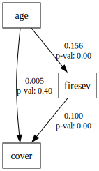
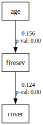
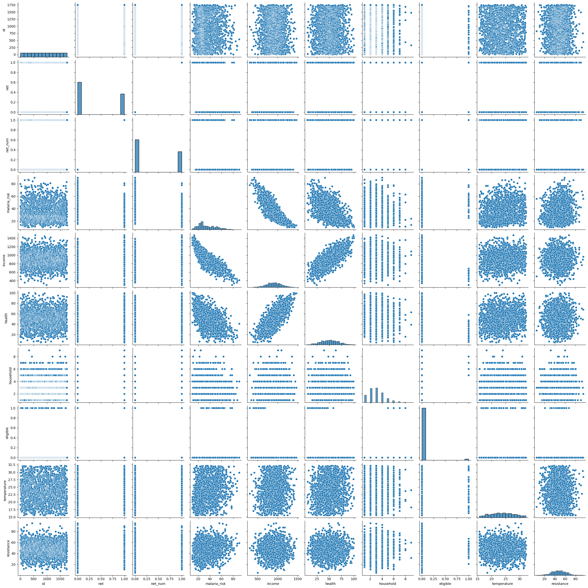
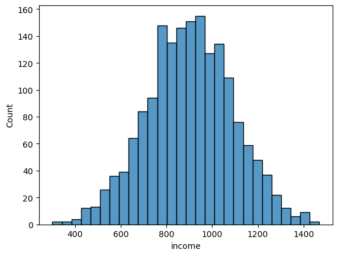
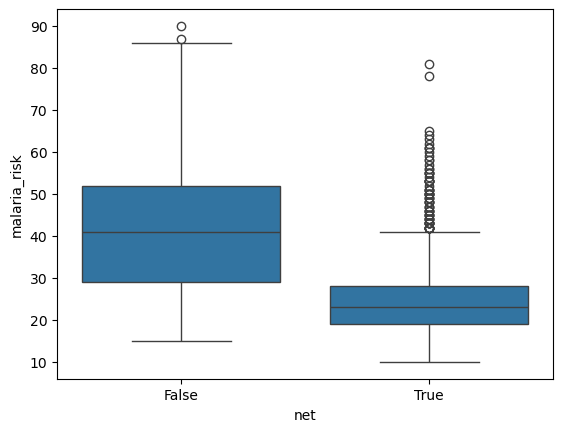

import numpy as np
import pandas as pd
import seaborn as sns
import semopyMosquito example
keeley = pd.read_csv("./data/keeley.csv")
keeley.drop('elev', axis=1, inplace=True)
keeley.describe()| distance | abiotic | age | hetero | firesev | cover | rich | |
|---|---|---|---|---|---|---|---|
| count | 90.000000 | 90.000000 | 90.000000 | 90.000000 | 90.000000 | 90.000000 | 90.000000 |
| mean | 49.234583 | 49.239025 | 25.566667 | 0.683319 | 4.565000 | 0.691232 | 49.233333 |
| std | 8.829480 | 7.679109 | 12.566274 | 0.114818 | 1.652347 | 0.317235 | 15.105658 |
| min | 37.037450 | 32.593865 | 3.000000 | 0.384182 | 1.200000 | 0.055577 | 15.000000 |
| 25% | 39.459800 | 43.812007 | 15.000000 | 0.624576 | 3.700000 | 0.487690 | 37.000000 |
| 50% | 51.770850 | 48.036046 | 25.000000 | 0.684314 | 4.300000 | 0.637118 | 50.000000 |
| 75% | 58.402237 | 54.898285 | 35.000000 | 0.768369 | 5.550000 | 0.914676 | 62.000000 |
| max | 60.723000 | 70.456286 | 60.000000 | 0.877938 | 9.200000 | 1.535408 | 85.000000 |
keeley_formula = 'firesev ~ age\ncover ~ age + firesev'mod = semopy.Model(keeley_formula)
res = mod.fit(keeley, obj="FIML")print(res)Name of objective: FIML
Optimization method: SLSQP
Optimization successful.
Optimization terminated successfully
Objective value: 1083.969
Number of iterations: 24
Params: 0.156 0.005 0.100 0.210 3.925mod.param_valsarray([0.15563028, 0.00451447, 0.10025475, 0.21013716, 3.92484989])mod.inspect()| lval | op | rval | Estimate | Std. Err | z-value | p-value | |
|---|---|---|---|---|---|---|---|
| 0 | firesev | ~ | age | 0.155630 | 0.016711 | 9.312882 | 0.000000e+00 |
| 1 | cover | ~ | age | 0.004514 | 0.005419 | 0.833150 | 4.047602e-01 |
| 2 | cover | ~ | firesev | 0.100255 | 0.024390 | 4.110421 | 3.949382e-05 |
| 3 | firesev | ~~ | firesev | 3.924850 | 0.585082 | 6.708204 | 1.970335e-11 |
| 4 | cover | ~~ | cover | 0.210137 | 0.031325 | 6.708204 | 1.970335e-11 |
from semopy.means import estimate_means
estimate_means(mod)| lval | op | rval | Estimate | |
|---|---|---|---|---|
| 0 | age | ~ | 1 | 25.566667 |
| 1 | firesev | ~ | 1 | 0.586052 |
| 2 | cover | ~ | 1 | 0.118149 |
semopy.calc_stats(mod)| DoF | DoF Baseline | chi2 | chi2 p-value | chi2 Baseline | CFI | GFI | AGFI | NFI | TLI | RMSEA | AIC | BIC | LogLik | |
|---|---|---|---|---|---|---|---|---|---|---|---|---|---|---|
| Value | 1 | 4 | 12.044105 | 0.00052 | 14.846056 | -0.01826 | 0.188734 | -2.245065 | 0.188734 | -3.07304 | 0.352266 | 7.106071 | 19.605119 | 1.446964 |
semopy.calc_stats(mod)[['chi2', 'chi2 p-value']]| chi2 | chi2 p-value | |
|---|---|---|
| Value | 12.044105 | 0.00052 |
semopy.calc_stats(mod)[['chi2', 'CFI', 'RMSEA']]| chi2 | CFI | RMSEA | |
|---|---|---|---|
| Value | 12.044105 | -0.01826 | 0.352266 |
g = semopy.semplot(mod, "test.png")
g
keeley_formula = 'firesev ~ age\ncover ~ firesev'
mod = semopy.Model(keeley_formula)
res = mod.fit(keeley)
print(semopy.calc_stats(mod)[['chi2', 'chi2 p-value']])TypeError: Solver.__init__() got multiple values for argument 'method'keeley_formula = 'firesev ~ age\ncover ~ firesev'
mod = semopy.Model(keeley_formula)
res = mod.fit(keeley)
print(semopy.calc_stats(mod)[['chi2', 'chi2 p-value']]) chi2 chi2 p-value
Value 3.297465 0.192294mod.inspect(std_est=True)| lval | op | rval | Estimate | Est. Std | Std. Err | z-value | p-value | |
|---|---|---|---|---|---|---|---|---|
| 0 | firesev | ~ | age | 0.059616 | 0.453442 | 0.012352 | 4.826435 | 1.389991e-06 |
| 1 | cover | ~ | firesev | -0.083902 | -0.437048 | 0.018201 | -4.609770 | 4.031137e-06 |
| 2 | firesev | ~~ | firesev | 2.144243 | 0.794390 | 0.319645 | 6.708204 | 1.970335e-11 |
| 3 | cover | ~~ | cover | 0.080476 | 0.808989 | 0.011997 | 6.708204 | 1.970335e-11 |
g = semopy.semplot(mod, "test.png")
g
keeley_formula = 'age ~ distance\nhetero ~ distance\nabiotic ~ distance\nfiresev ~ age\ncover ~ firesev\nrich ~ cover + hetero + abiotic + distance'mod = semopy.Model(keeley_formula)
res = mod.fit(keeley)
mod.inspect()| lval | op | rval | Estimate | Std. Err | z-value | p-value | |
|---|---|---|---|---|---|---|---|
| 0 | age | ~ | distance | -0.395876 | 0.144576 | -2.738183 | 6.177962e-03 |
| 1 | hetero | ~ | distance | 0.004499 | 0.001286 | 3.498238 | 4.683427e-04 |
| 2 | abiotic | ~ | distance | 0.399777 | 0.081389 | 4.911938 | 9.018049e-07 |
| 3 | firesev | ~ | age | 0.059678 | 0.012313 | 4.846912 | 1.253983e-06 |
| 4 | cover | ~ | firesev | -0.083934 | 0.018190 | -4.614244 | 3.945291e-06 |
| 5 | rich | ~ | cover | 13.626100 | 3.417470 | 3.987189 | 6.686079e-05 |
| 6 | rich | ~ | hetero | 44.282423 | 10.049588 | 4.406392 | 1.051067e-05 |
| 7 | rich | ~ | abiotic | 0.491382 | 0.158800 | 3.094346 | 1.972476e-03 |
| 8 | rich | ~ | distance | 0.485038 | 0.145445 | 3.334848 | 8.534589e-04 |
| 9 | abiotic | ~~ | abiotic | 45.961067 | 6.851471 | 6.708204 | 1.970335e-11 |
| 10 | age | ~~ | age | 145.028612 | 21.619589 | 6.708204 | 1.970335e-11 |
| 11 | cover | ~~ | cover | 0.080498 | 0.012000 | 6.708204 | 1.970335e-11 |
| 12 | firesev | ~~ | firesev | 2.143627 | 0.319553 | 6.708204 | 1.970335e-11 |
| 13 | hetero | ~~ | hetero | 0.011476 | 0.001711 | 6.708204 | 1.970335e-11 |
| 14 | rich | ~~ | rich | 104.311698 | 15.549870 | 6.708204 | 1.970335e-11 |
semopy.calc_stats(mod)[['chi2', 'chi2 p-value']]# Get modification indices ## GEMINI IS WRONG!!
mi = mod.inspect(mode='list', what="mi")
# Print the modification indices
print(mi) lval op rval Estimate Std. Err z-value p-value
0 age ~ distance -0.395876 0.144576 -2.738183 6.177962e-03
1 hetero ~ distance 0.004499 0.001286 3.498238 4.683427e-04
2 abiotic ~ distance 0.399777 0.081389 4.911938 9.018049e-07
3 firesev ~ age 0.059678 0.012313 4.846912 1.253983e-06
4 cover ~ firesev -0.083934 0.018190 -4.614244 3.945291e-06
5 rich ~ cover 13.626100 3.417470 3.987189 6.686079e-05
6 rich ~ hetero 44.282423 10.049588 4.406392 1.051067e-05
7 rich ~ abiotic 0.491382 0.158800 3.094346 1.972476e-03
8 rich ~ distance 0.485038 0.145445 3.334848 8.534589e-04
9 abiotic ~~ abiotic 45.961067 6.851471 6.708204 1.970335e-11
10 age ~~ age 145.028612 21.619589 6.708204 1.970335e-11
11 cover ~~ cover 0.080498 0.012000 6.708204 1.970335e-11
12 firesev ~~ firesev 2.143627 0.319553 6.708204 1.970335e-11
13 hetero ~~ hetero 0.011476 0.001711 6.708204 1.970335e-11
14 rich ~~ rich 104.311698 15.549870 6.708204 1.970335e-11mosquito = pd.read_csv("./data/mosquito_nets.csv")
mosquito.describe()| id | net_num | malaria_risk | income | health | household | temperature | resistance | |
|---|---|---|---|---|---|---|---|---|
| count | 1752.000000 | 1752.000000 | 1752.00000 | 1752.000000 | 1752.00000 | 1752.000000 | 1752.000000 | 1752.000000 |
| mean | 876.500000 | 0.388699 | 35.58847 | 904.797374 | 50.72032 | 2.988584 | 23.813128 | 47.789384 |
| std | 505.903153 | 0.487594 | 15.45673 | 188.750024 | 18.21132 | 1.412147 | 4.107322 | 13.857257 |
| min | 1.000000 | 0.000000 | 10.00000 | 301.000000 | 5.00000 | 1.000000 | 15.600000 | 5.000000 |
| 25% | 438.750000 | 0.000000 | 24.00000 | 779.000000 | 38.00000 | 2.000000 | 20.600000 | 38.000000 |
| 50% | 876.500000 | 0.000000 | 31.00000 | 904.500000 | 51.00000 | 3.000000 | 23.800000 | 48.000000 |
| 75% | 1314.250000 | 1.000000 | 46.00000 | 1036.000000 | 63.00000 | 4.000000 | 26.900000 | 57.000000 |
| max | 1752.000000 | 1.000000 | 90.00000 | 1469.000000 | 100.00000 | 9.000000 | 32.200000 | 95.000000 |
sns.pairplot(mosquito)
sns.histplot(mosquito, x="income")
sns.boxplot(mosquito, x="net", y="malaria_risk")